Chapter 4 Tidymass shiny Toolkits
4.1 fMSEA Analysis
Feature-based Metabolite Set Enrichment Analysis (fMSEA) is a powerful method for interpreting metabolomics data by identifying enriched metabolic pathways. This module provides a comprehensive workflow from metabolite annotation to pathway enrichment analysis, with optional LLM-powered evaluation for enhanced biological interpretation.
We have developped featureMSEA, a R package to perform fMSEA analysis, and the shinyapp is built based on this package and has been integrated into tidymass shiny.
To use the shinyapp of FMSEA, you need to launch the tidymass shiny and click the fMSEA Analysis module under the Tidymass shiny toolkits dropdown menu.

4.1.1 Data Upload
To begin fMSEA analysis, you need to prepare the following data files in .rda format. Click the respective buttons to select your files; the file paths will be displayed once successfully loaded.
Required Files:
- Feature Table: A processed feature table containing your metabolomics data.
- MS1 Database: A metabolite database for MS1 annotation (Support for KEGG and HMDB).
- Pathway Database: A pathway database (Support 5 public databases: KEGG, HMDB, IMETPD, Reactome and Wikipathway).
Optional Files:
- Existing Results: Previously saved fMSEA results for continuing a previous analysis.
Demo data can be downloaded through Google Drive.
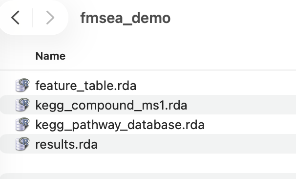
You can upload these files by clicking the buttoms and selecting these files.

Alternatively, you can also upload the fmsea results object file if you have performed the analysis. In this way, you can skip Step 1 and Step 2.
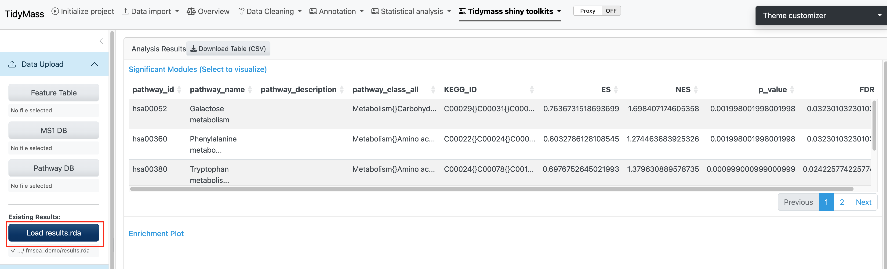
4.1.2 Step 1: Annotation
The first step performs metabolite annotation using the provided MS1 database. This process matches the features to known metabolites based on m/z.
Parameters:
- Column: Chromatographic column type. Options:
"rp"(reverse phase),"hilic". Default is"rp". - DB Type: Database type used for annotation. Options:
"KEGG","HMDB". Default is"KEGG". - MS1 PPM: Mass accuracy threshold for MS1 matching in parts per million (ppm). Default is
15. - RT Tol (s): Retention time tolerance for mfc clustering. Default is
10. - Isotope No.: Maximum number of isotopes to consider. Default is
3.
Once you have set the parameters, click Run Step 1 to perform the annotation.
Note: The analysis may take a long time, please be patient.
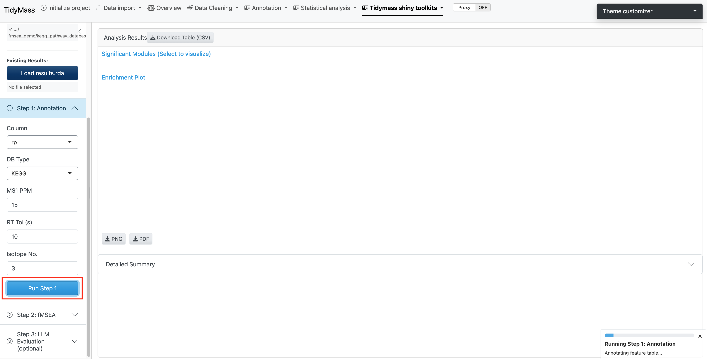
4.1.3 Step 2: fMSEA Analysis
The second step performs the actual pathway enrichment analysis using the annotated metabolites generated in Step 1.
Parameters:
- Threads: Number of threads for parallel processing. Default is
3. - Min Compounds: Minimum number of compounds required in a pathway. Default is
15. - Max Compounds: Maximum number of compounds allowed in a pathway. Default is
300. - Permutations: Number of permutations for statistical testing. Default is
1000. - Max Iterations: Maximum number of iterations for the algorithm. Default is
1. - FDR Thr: False Discovery Rate threshold for significance. Default is
0.05.
Click Run Step 2 to perform the fMSEA analysis.
Note: The analysis may take several minutes depending on your data size and the number of permutations selected.
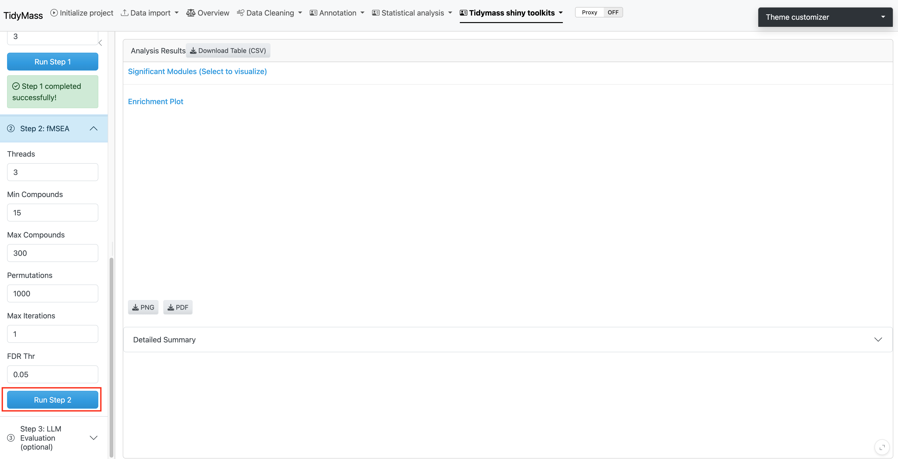
4.1.4 Results Visualization
The analysis results are displayed in an interactive interface:
- Significant Modules Table: Lists all significantly enriched pathways with statistics. Click on any row to visualize the corresponding enrichment plot.
- Enrichment Plot: Displays the enrichment score (ES) profile for the selected pathway.

4.1.5 Step 3: LLM Evaluation (Optional)
This step provides AI-powered evaluation of the enriched pathways using Large Language Models (LLMs) to offer two types of biological validation:
4.1.5.1 1. Matrix Relevance Analysis
- Sample Source: Define the biological matrix (e.g., “urine”, “plasma”, “serum”, “blood”, “feces”).
- Function: Evaluates how reliably metabolites in the specified matrix indicate pathway activity.
4.1.5.2 2. Literature Relevance Analysis
- Research Topic: Define your research focus (e.g., “cancer”, “diabetes”, “pregnancy”).
- Function: Searches PubMed literature and provides confidence scores for pathway relevance to your specific topic.
API Configuration:
- API Provider: Choose between “SiliconFlow (Qwen)” or “OpenAI (GPT)”. Default is SiliconFlow.
- API Key: Enter your valid API key for the selected provider.
Check the boxes to select which analyses to run (both are enabled by default), then click Run LLM Evaluation.

Download Options:
- Download pathway tables in CSV format.
- Download enrichment plots as PNG or PDF.
- Download complete LLM evaluation results.
4.2 Feature-based Pathway Analysis (FPA)
The metabolic feature-based functional module analysis approach can significantly expands biological interpretation beyond MS2 spectra-based annotated metabolites. You may refer to Tidymass Website for detailed documentation.
4.3 Metabolite database construction
If you have in-house standards which have been acquired with MS2 spectra data, then you can construct the in-house MS2 spectra databases using the MetID package.
There are no specific requirements on how to run the LC/MS data for users. As the in-house database construction in metid is used for users to get the in-house databases for themselves (including m/z, retention time and MS/MS spectra of metabolites, for level 1 annotation (Sumner et al., 2007)), so the users just need to run the standards using the same column, LC-gradient, and MS settings with their real samples in the lab
Data preparation
In Tidymass shinyapp, we provide a dedicated module for in-house database construction. To prepare your workflow, please follow the comprehensive step-by-step instructions available at:
https://metid.tidymass.org/articles/database_construction
Construct in-house database with MS2 spectra
- Selec input file
- Click the File Path button
- Select a CSV-formatted file containing metabolite metadata.
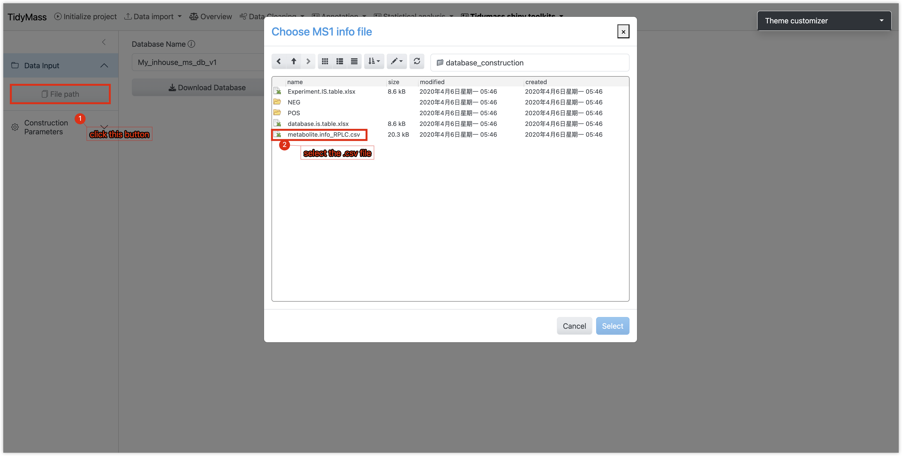
2. Configure Database Parameters - Navigate to the Construction Parameters tab - Review and adjust database-specific details - Click the Build Database button to initiate the process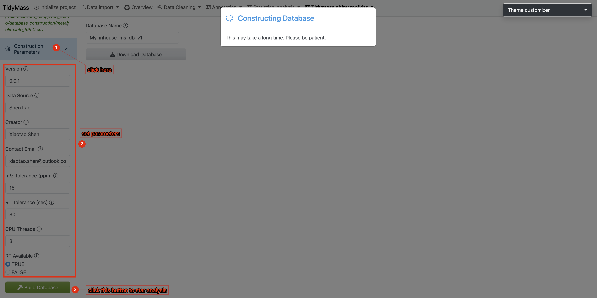
- Result Verification & Database Export
- Spectral information will be displayed in the main interface (verify key metadata like m/z values and retention times)
- Assign a unique identifier to your custom database (eg: “demo_inhouse_database”)
- Click Download Database to save the compiled database to your local system
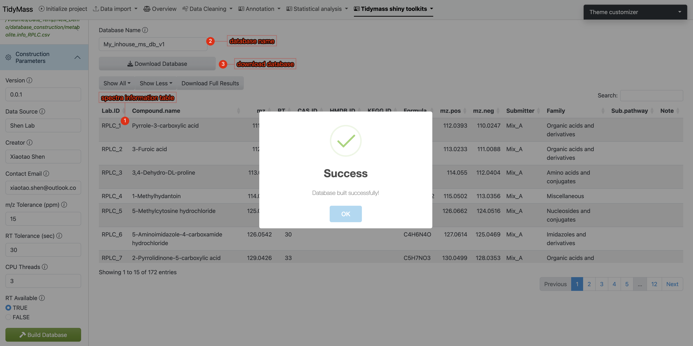
- Workflow Execution:
- Place the downloaded database file (.rda, R Data format) into a dedicated empty directory
- During the Metabolite Annotation phase of the workflow:
‣ Click Choose Folder
‣ Navigate to the directory containing your custom database - Initiate the annotation process by clicking the Start Annotation button
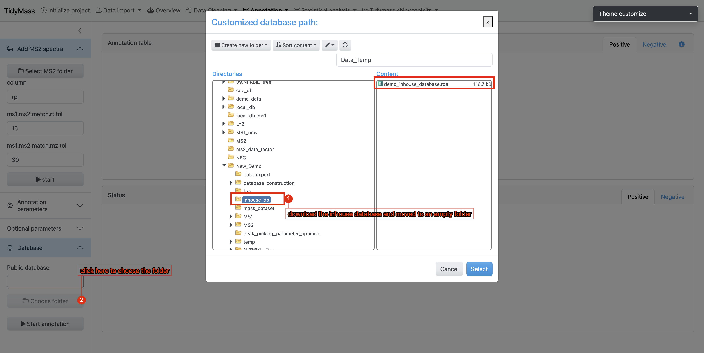
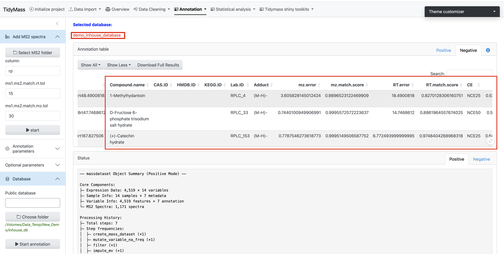
4.4 KEGG Pathway Database Construction
When the research subject is not human, constructing a species-specific KEGG pathway database becomes essential for conducting enrichment analysis. The KEGG database contains comprehensive metabolic pathway data for various organisms, including 1,169 eukaryotes, 9,208 bacteria, and 449 archaea (refer to KEGG Organisms List). Researchers should first identify their target species’ organism code (e.g., hsa for Homo sapiens, mmu for Mus musculus, ath for Arabidopsis thaliana) from this resource.
The tidymass shiny provides a dedicated module for constructing species-specific pathway databases using these organism codes. The generated pathway database can subsequently be applied to metabolite KEGG pathway enrichment analysis through either the tidymass shiny interface or tidymass R programming.
Operational Workflow
Directory Preparation
Create a dedicated working directory (e.g.,
kegg_pathway_db). Navigate to theKEGG Pathway Database Constructiontool under theTidymass Shiny Toolkitsdropdown menu in the tidymass shiny interface.Workspace Configuration
- Click
Set working directoryin the sidebar’s Data Input section - Select the newly created
kegg_pathway_dbdirectory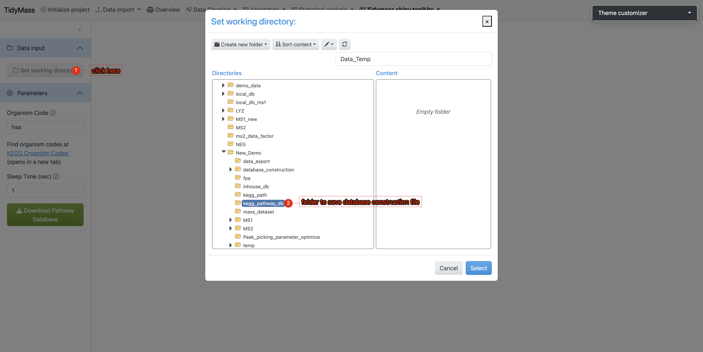
- Click
Parameter Settings
Under the Parameters section:
- Enter the target organism code (case-sensitive)
- Set sleep time between 1-1.5 seconds (minimum 1s to prevent server overload)
- Initiate download by clicking
Download pathway
Execution Monitoring
- A progress bar will appear in the lower-right interface
- Real-time KEGG pathway data retrieval requires stable internet connectivity
- If interruptions occur:
- Verify network connection
- Consider increasing sleep interval
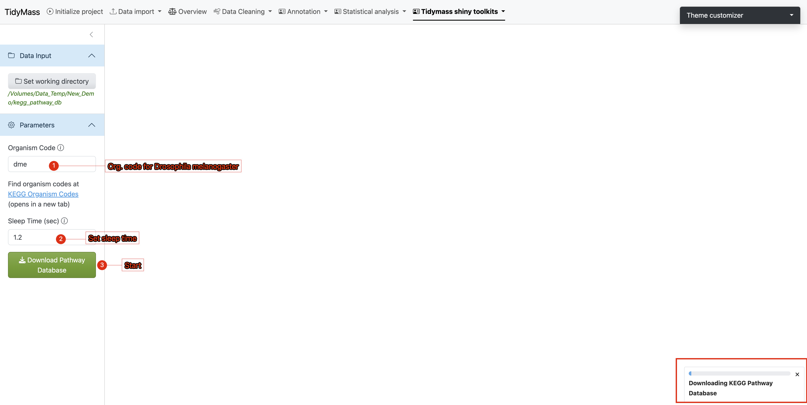
Completion Verification
Upon successful database construction:
- The main interface displays execution logs
- File paths of generated databases are explicitly shown
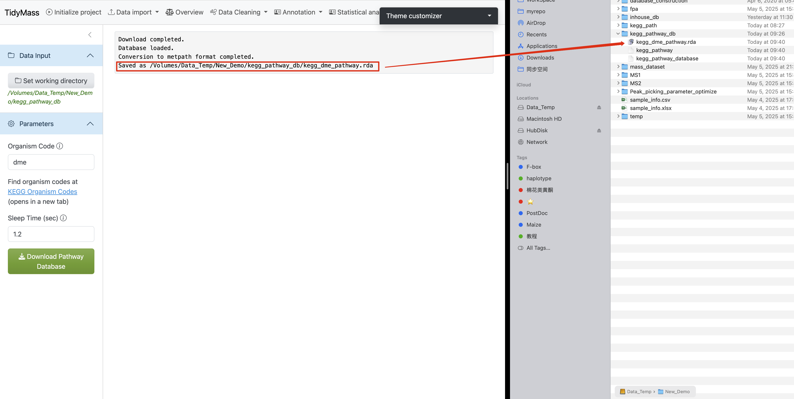
This automated process ensures reproducible creation of organism-specific KEGG pathway resources while maintaining compliance with KEGG server access protocols.
- Use your pathway database in KEGG enrichment analysis
In the annotation results, you will find that Pathway IDs adopt the organism code (e.g., dme) from your custom database as their prefix. This confirms that your provided database was successfully utilized during the KEGG enrichment analysis.
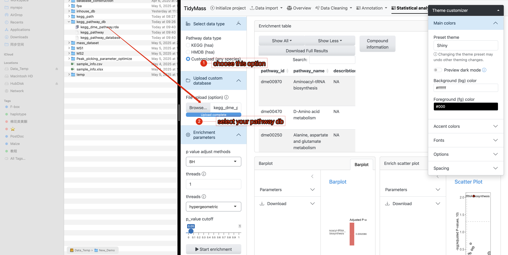
4.5 Metabolite ID Conversion
Metabolites often possess distinct identifiers across analytical databases, necessitating cross-platform ID translation. Tidymass Shiny offers integrated solutions for this purpose:
Established Services
- CTS - Chemical Translation Service by Fiehn Lab
- ChemSpider chemical structure resolver
Experimental AI-Powered Conversion
- Utilizes OpenAI’s language models (caution: non-finetuned LLMs may generate unreliable outputs; use judiciously)
API Requirements
- ChemSpider: Register API key
- OpenAI: Obtain API credentials
Operational Protocol
Step 1: Platform Selection
- Under Convert Parameters, choose a translation service
Step 2: Input Configuration
Source Identification
- Enter query term in Source ID Type (autocompletion suggests compatible databases)
- Example: Select Chemical Name
Target Specification
- Choose output format in Target ID Type (e.g., HMDB ID)
Step 3: Execution
- Input compound identifiers in Conversion Input
- Click
Convert ID
Step 4: Output Retrieval
- Translated IDs display in tabular/JSON format after computational latency
- Failed mappings highlight discrepancies for manual verification
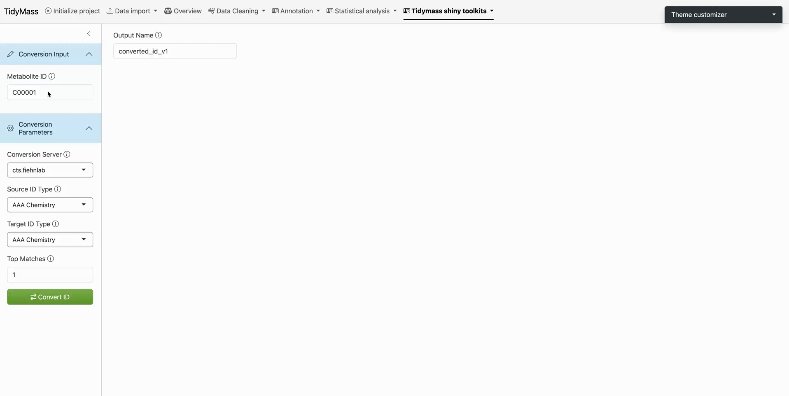